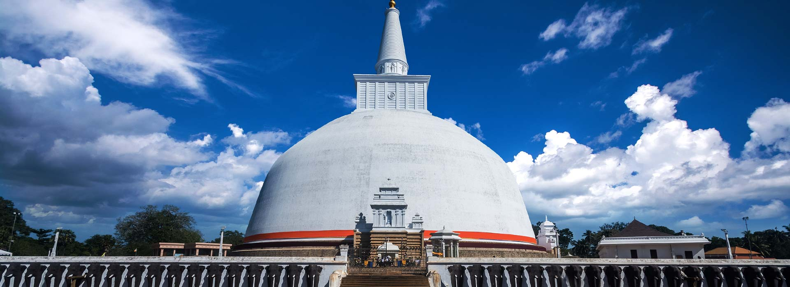

One of the world's tallest monuments, the majestic white 'Great Gold Stupa' of King Dutugemunu.
Built by King Dutugemunu in 140 BC, the Ruwanwelisaya is a marvel of ancient engineering. Standing at around 103 meters (338 feet), it was once one of the tallest monuments in the world. It is also known as the Maha Stupa or the Great Stupa.
The stupa is surrounded by a massive wall of elephants, symbolically carrying the weight of the structure. It houses two quarts of the Buddha's relics, making it one of the eight major places of veneration in the sacred city. The brilliant white dome, especially when lit up at night, is a sight of unparalleled serenity.
Back to Anuradhapura Hub